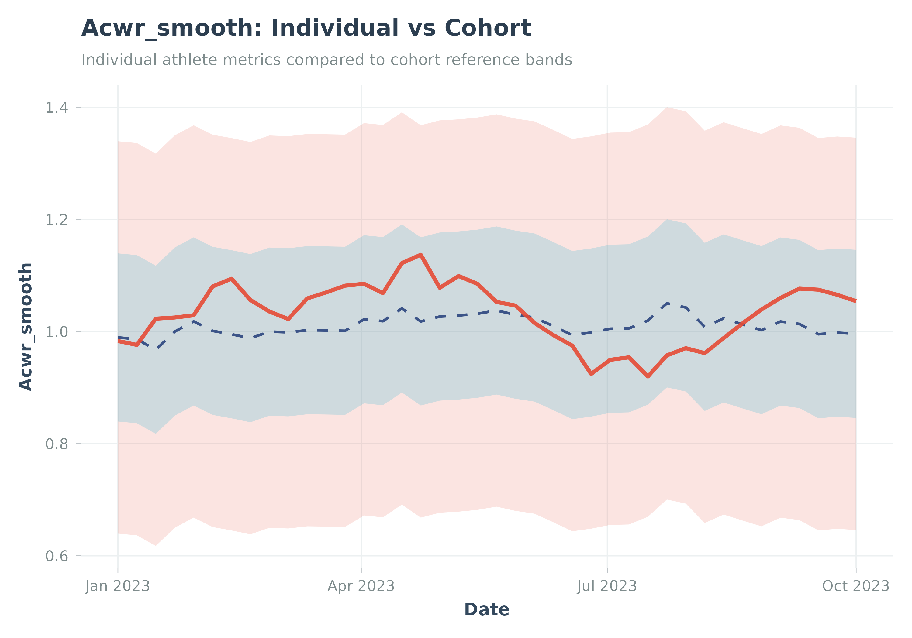

Creates a complete plot showing an individual's metric trend with cohort reference percentile bands.
Usage
plot_with_reference(
individual,
reference,
metric = "acwr_smooth",
date_col = "date",
title = NULL,
bands = c("p25_p75", "p05_p95", "p50")
)Arguments
- individual
A data frame with individual athlete data (from calculate_acwr, etc.)
- reference
A data frame from
calculate_cohort_reference().- metric
Name of the metric to plot. Default "acwr_smooth".
- date_col
Name of the date column. Default "date".
- title
Plot title. Default NULL (auto-generated).
- bands
Which reference bands to show. Default c("p25_p75", "p05_p95", "p50").
Examples
# Simple example with fixed data
individual_data <- data.frame(
date = as.Date(c("2023-01-01", "2023-04-01", "2023-07-01", "2023-10-01")),
acwr_smooth = c(1.0, 1.2, 0.9, 1.1)
)
reference_data <- data.frame(
date = as.Date(c("2023-01-01", "2023-04-01", "2023-07-01", "2023-10-01")),
percentile = rep(c("p05", "p25", "p50", "p75", "p95"), 4),
value = c(
0.7, 0.9, 1.1, 1.3, 1.5,
0.7, 0.9, 1.1, 1.3, 1.5,
0.7, 0.9, 1.1, 1.3, 1.5,
0.7, 0.9, 1.1, 1.3, 1.5
)
)
p <- plot_with_reference(
individual = individual_data,
reference = reference_data,
metric = "acwr_smooth"
)
print(p)

if (FALSE) { # \dontrun{
plot_with_reference(
individual = athlete_acwr,
reference = cohort_ref,
metric = "acwr_smooth"
)
} # }